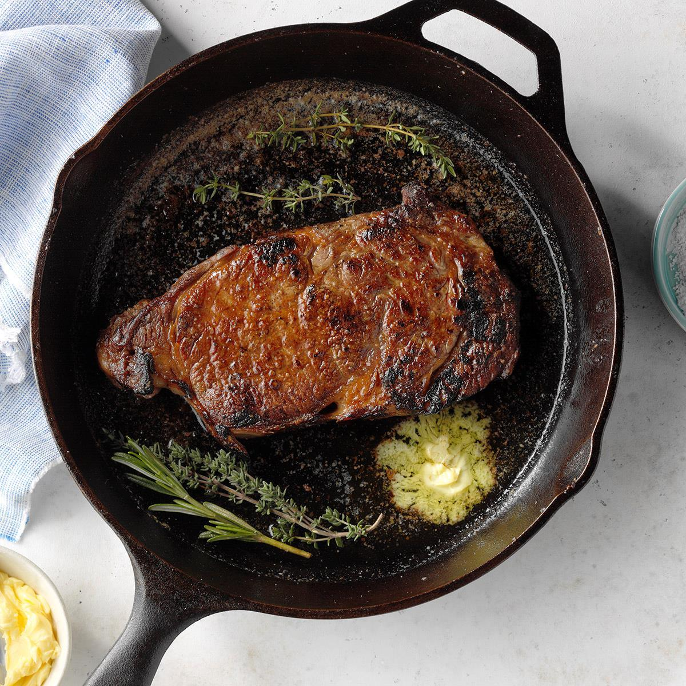

The Cast Iron Skillet Blog
The Cast Iron Skillet BlogCast Iron Seared Steak

Ingredients
- 2 boneless ribeye steaks, about 1 1/2 inches thick
- 2 tablespoons vegetable oil
- 2 cloves garlic, minced
- 2 sprigs fresh rosemary
- 2 tablespoons unsalted butter
- 1/2 teaspoon salt
- 1/4 teaspoon black pepper
Instructions
- Remove the steaks from the refrigerator and let them come to room temperature for about 30 minutes.
- Preheat your oven to 400°F (200°C) and place a 10-inch cast iron skillet in the oven while it preheats.
- Pat the steaks dry with paper towels and season both sides with salt and black pepper.
- Remove the skillet from the oven (careful, it will be hot!) and place it on the stove over medium-high heat. Add the vegetable oil and heat until it begins to shimmer.
- Add the minced garlic and rosemary to the skillet, stirring for about 30 seconds to infuse the oil with flavor.
- Carefully add the steaks to the skillet, laying them away from you to avoid splattering hot oil. Cook for about 2-3 minutes on each side to form a crust.
- Add the butter to the skillet, spooning it over the steaks as it melts. Transfer the skillet to the preheated oven and bake for 6-8 minutes for medium-rare or until desired doneness is reached.
- Remove from the oven and let the steaks rest for 5-10 minutes before slicing and serving.